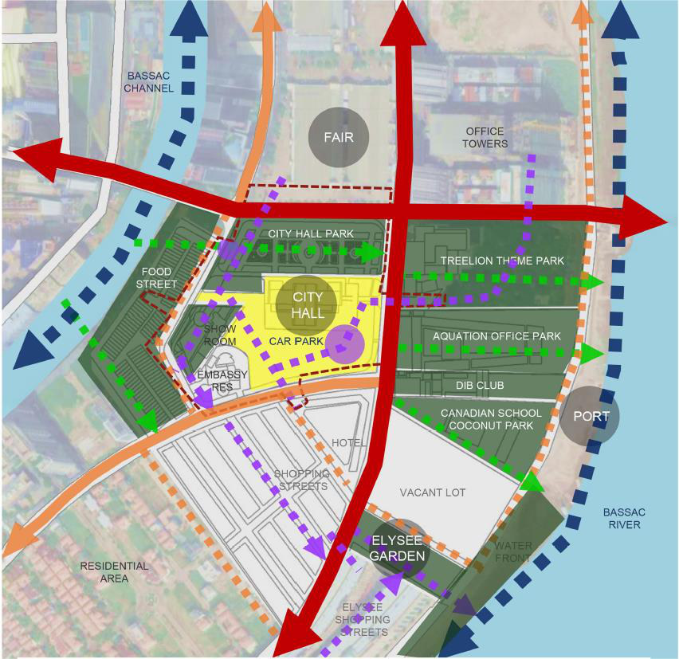
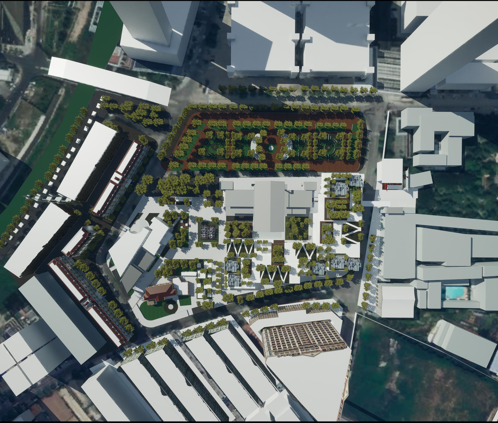
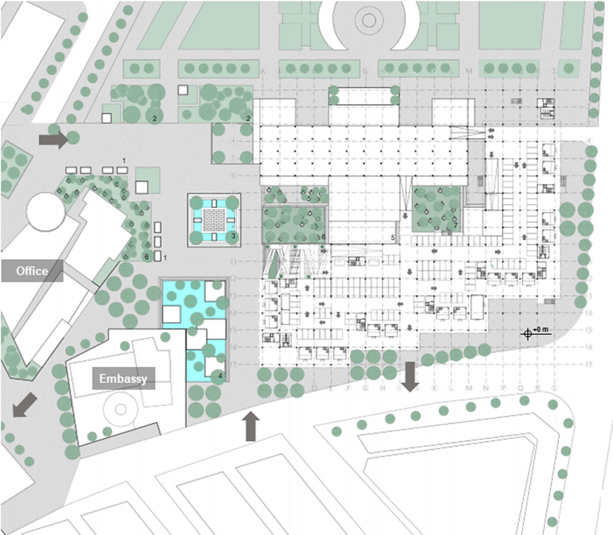
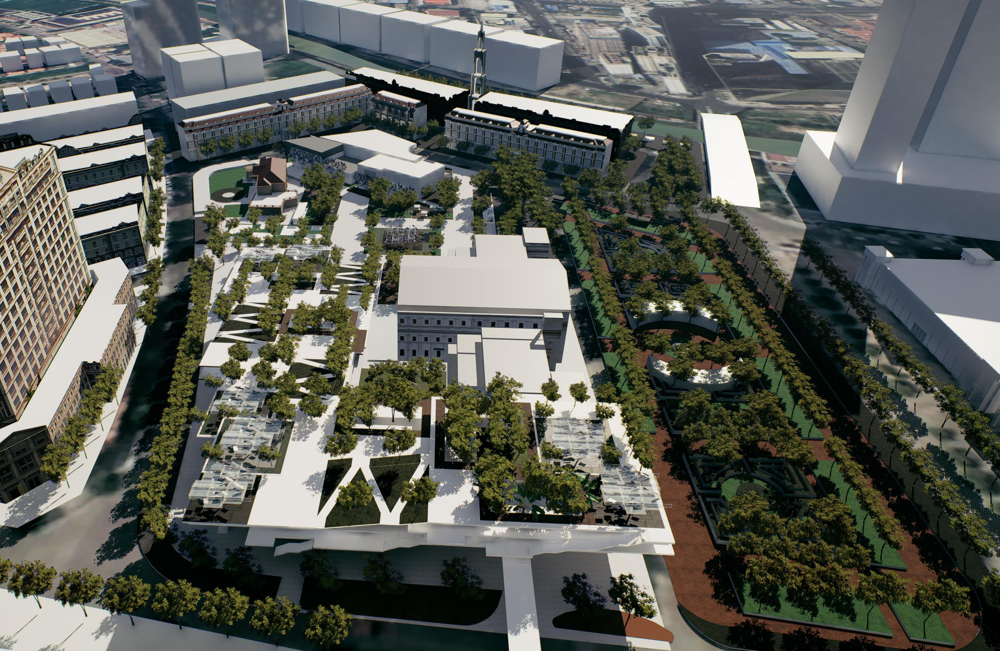

01 — The Jungle
From City in the Jungle to Jungle in the City
Introduction of an urban perspective to produce green spaces managed by the private sector by activating the carpark, green elements, and enforcing identity.
Comprehensive Analysis
The satellite cities in Phnom Penh are normally the consequences of the investment private sector resulting in what the other researches called "inaccessible green spaces". Koh Pich is an expansion of Phnom Penh as a satellite city in which the prevalent interest is related to the margin of profit of a company. At present, the area is fragmented by roads. However, there is sufficient green to potentially be connected a network within the island.
To become the central hub, the City Hall area would need to be connected to the Fair, the Elysee and the rest of the island. The analysis envisioned not only the green site, but also the road structure connecting the green network to existing buildings.

Concept Diagram
The site is located in portion of the area where the green elements are fragmented and enclosed. Corners are subtracted to make welcoming connections to the public rather than having a solid and formal object opposing to the street.
The mass is split and extruded to create variation of heights connecting the ground level up to the height of the city hall. The visual impact is further reduced by treating the floors as superimposed layers and avoiding vertical façade windows. Offset terraces introduce green roofs, and the landscape offers a seamless experience connecting shophouses, Town Hall, and the main road.
Masterplan
The city hall is located in an isolated area disproportionate to its surroundings and isolated by a fence. However, there is adequate green infrastructure and potential to create a green corridor towards the river, forming a network of green spaces across the island.
The building offers rooftop spaces and a bridge connecting to Treelion Park, the river, and nearby buildings — establishing a central hub with accessible public green areas. It is designed to attract young people through an open market, vendors, shops, sports, offices, café and bar, integrated into green space and parking, with flexible event spaces.

Ground Floor
From the main entrance, subdivisions of steps function as vendors to welcome visitors. Passing through small terraces, the landscape invites users with a formal element at the west wing of the city hall and the market at the south. Spaces decentralize from the pavilion towards urban forests, a café floated on water, and a journey across the wedding platform offering the sensation of terraces and jungle.

Renderings
Arial View, Southeast Corner: The elevated car parks and shops are connected with stairs to the rooftop. Then the city hall's park introduces green canopies, connecting to the food street at the water channel.

Arial View, Southwest Corner: The green element continues upwards with the sloping garden, pavilion, sunken gardens, green canopies and recreation area.

{kind=link}
{kind=link}
{kind=link}
{kind=link}
{kind=link}
{kind=link}
{kind=link}
{kind=link}
{kind=link}
{kind=link}
{kind=link}
{kind=link}
{kind=link}
South Elevation: Garden ramp connecting terrace levels alongside the sunken garden and pavilions. East Elevation: Superimposed horizontal slabs with recessed columns, pavilions and recreation on the rooftops.
{kind=link}
{kind=link}